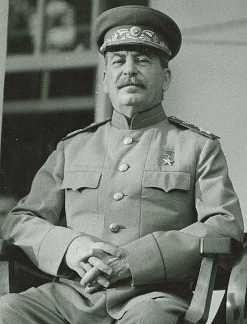

Впервые Советский Союз принял участие в вооружённых конфликтах Второй мировой войны 17 сентября 1939 года, во время так называемого Польского похода РККА, а непосредственно вступил в войну — 22 июня 1941 года, после вторжения на его территорию вооружённых сил нацистской Германии и её европейских союзников, что в советской историографии ознаменовало собой начало Великой Отечественной войны. Советская и мировая историография имеют различные точки зрения на включение ряда военных кампаний в ход Второй мировой войны (в частности, Польский поход РККА, последующий ввод советских войск в Литву, Латвию, Эстонию, Бессарабию, Зимняя война с Финляндией — все эти события не считаются советской и российской историографией участием СССР во Второй мировой войне), тем не менее согласно мнению экспертов, именно СССР внёс самый значительный вклад в победу стран антигитлеровской коалиции во Второй мировой.
Достоверные данные о потерях СССР во Второй мировой войне замалчивались, а официально озвученные — постоянно менялись в разные годы. Согласно рассекреченным данным Госплана СССР, потери Советского Союза во Второй мировой войне составляют 41 миллион 979 тысяч, а не 27 миллионов, как считалось ранее[2]. По оценке кандидата военных наук, профессора Академии военных наук генерал-полковника Г. Ф. Кривошеева, общие демографические потери СССР (включающие погибшее мирное население на оккупированной территории и повышенную смертность на остальной территории СССР от невзгод войны) — 26,6 млн человек. Однако, по мнению профессора международной политической экономии в Вулверхэмптонского университета М. Хейнса, число полученное группой Г. Ф. Кривошеева, задаёт лишь нижний предел всех потерь СССР в войне. Реальное общее число потерь СССР в результате войны, где причиной смерти стали военные насилия, недоедания, болезни или репрессии, колеблется где-то между 26,6 и 42,7 млн человек